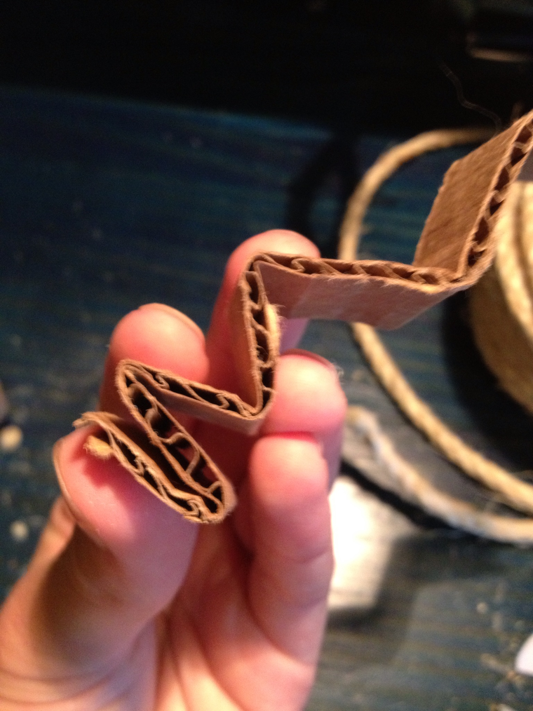
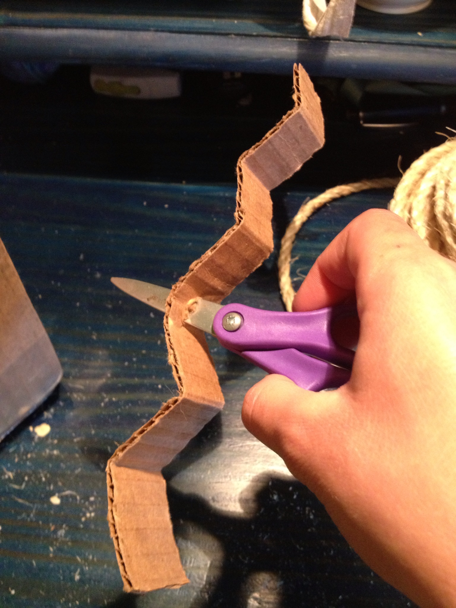
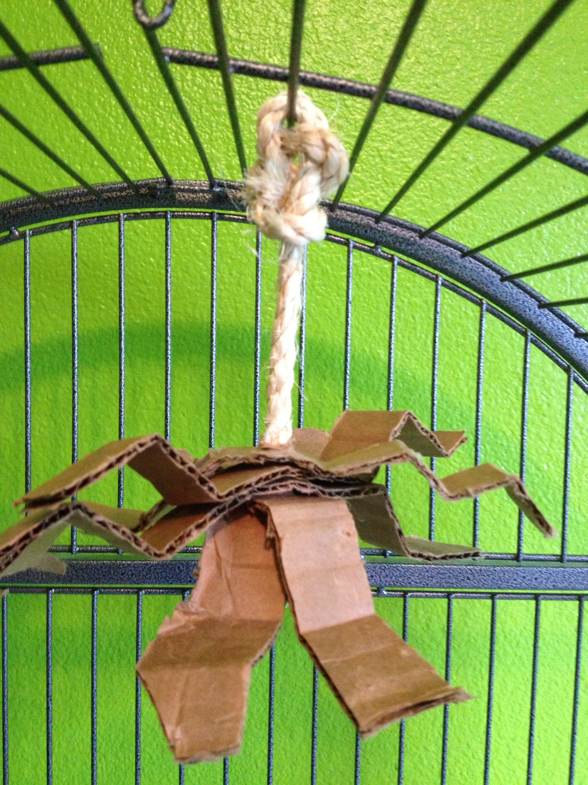

Spider Legs
MATERIALS: cardboard, rope, scissors
1.Cut 4 strips of cardboard about 1" wide x 8" long, and
bend them back and forth so that they are bent in a zigzag.

2. Cut a piece of rope about 8" long, and tie a knot in the bottom.

3. Use scissors to stab holes in the strips of cardboard.
Then string the pieces of cardboard onto the rope, and twist
them so they are all pointing different directions. Use the
extra rope at the top to attach the toy to the cage.

